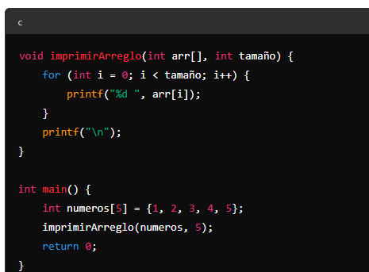

ARREGLOS
Los arreglos pueden ser unidimensionales, bidimensionales o multidimensionales
Un arreglo unidimensional, también conocido como vector, es una secuencia de elementos del mismo tipo que se almacenan en posiciones contiguas de memoria. Cada elemento del arreglo se identifica por su posición, que comienza en 0 en muchos lenguajes de programación.
Un arreglo bidimensional, también conocido como matriz, es una estructura de datos en forma de tabla con filas y columnas. Cada elemento de la matriz se identifica por su posición en la fila y columna correspondiente.
Los arreglos multidimensionales son extensiones de los arreglos bidimensionales y permiten almacenar elementos en más de dos dimensiones.
Los arreglos son útiles cuando se necesita almacenar y manipular múltiples valores del mismo tipo de manera eficiente. Pueden ser utilizados para representar datos tabulares, imágenes, matrices numéricas y más.
Para acceder a los elementos de un arreglo, se utilizan índices que indican la posición del elemento deseado. Es importante tener en cuenta que los índices generalmente comienzan en 0 en la mayoría de los lenguajes de programación.
Para acceder a los elementos de un arreglo, se utilizan índices que indican la posición del elemento deseado. Es importante tener en cuenta que los índices generalmente comienzan en 0 en la mayoría de los lenguajes de programación.
En resumen, los arreglos son estructuras de datos que permiten almacenar y acceder a múltiples elementos del mismo tipo de manera ordenada. Son ampliamente utilizados en programación para manejar conjuntos de datos y realizar operaciones eficientes.
SINTAXYS
